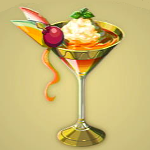

Noble Pursuit

Description
A prized beverage in Gerudo
Ingredients
Steps
- Procure the ice from the fridge near Yiga base. Be sure to be swift as the ice melts quickly in the Gerudo sun
- In the finest glass, pour in the cream and alcohol.
- Finally, add the precious ice
- Humm a classic tune and jump for joy when complete!